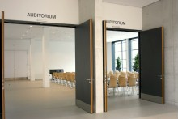
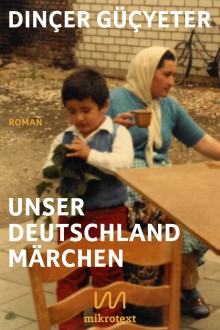
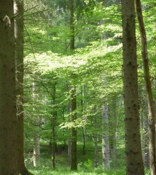

VERANSTALTUNGEN
Das Auditorium des Kunstquartiers im Emil Schumacher Museum ist für Vorträge, Filmvorführungen, Konzerte und Festveranstaltungen eingerichtet. Direkt an das Foyer des Kunstquartiers angeschlossen, bietet der Saal Platz für 130 Personen.

18. UHR, VORTRAG
JÜDISCHE GESCHICHTE IN HAGEN
VON DER FRÜHEN NEUZEIT BIS ZUR GEGENWART
Dr. Ralf Blank ( Leiter Geschichtsmussen & Stadtarchiv Hagen) und die Gesellschaft für Christlich Jüdische Zusammenarbeit Hagen und Umgebung e.V. zu Gast im Emil Schumacher Museum:
JÜDISCHE GESCHICHTE IN HAGEN
VON DER FRÜHEN NEUZEIT BIS ZUR GEGENWART
Die Ansiedlung von Juden im Raum Hagen lässt sich bis in das 17. Jahrhundert zurückverfolgen. In Hagen, gelegen in der preußischen Grafschaft Mark, waren bis zu Beginn des 19. Jahrhunderts eine überschaubare Zahl von jüdischen Familien wohnhaft. Die auch von antisemitischen Klischees geprägten Regierungsbehörden und die Stadtverwaltung beschränkten den Zuzug von Juden bis zur Französischen Herrschaft 1807-1813 deutlich ein. Im „Vormärz“ erlebte auch die jüdische Gemeinde in Hagen die Rückwirkungen der Emanzipation, so dass die Zahl der Gemeindemitglieder sich vermehrte. In der benachbarten Grafschaft Limburg vollzog sich besonders im 18. Jahrhundert eine durch das bis 1806 regierende Grafenhaus unter finanziellen Aspekten umfangreiche Ansiedlung jüdischer Familien. Im 19. Und 20. Jahrhundert waren Juden in der Stadtpolitik sowie im kulturellen, politischen, wirtschaftlichen und gesellschaftlichen Leben integriert. Der Nationalsozialismus und die Shoa bildeten einen tiefen Einschnitt, der das jüdische Leben in Hagen hart getroffen hatte.
Der Vortrag behandelt die Geschichte der jüdischen Gemeinde im Gebiet der heutigen Stadt Hagen bis in die frühe Nachkriegszeit in den sechziger Jahren des 20. Jahrhunderts.
Eintritt frei
15.06.2023, 18 UHR, LESUNG
WIR, KINDER DER KLEINEN MEHRHEITEN
Gemeinsame Lesung mit Journalistin Oyinda Alashe und Aktivist Gianni Jovanovic aus ihrem Buch "Ich, ein Kind der kleinen Mehrheit”
WIR, KINDER DER KLEINEN MEHRHEITEN
Gianni Jovanovic, Aktivist + Polit-Performer
Der Aktivist Gianni Jovanovic und die Journalistin Ovinda Alashe lesen gemeinsam aus ihrem Buch „Ich, ein Kind der kleinen Mehrheiten".
Darin erzählt Jovanovic aus seinem Leben als Sohn einer Roma- Familie aus Rüsselsheim. Im Alter von 14 Jahren arrangierten seine Eltern seine Zwangsehe, aus der zwei Kinder hervorgehen, bevor er sich mit Anfang 20 als homosexuell outet. Er engagiert sich für die Rechte von Roma und Sinti und ist Gründer des Vereins „Queer Roma"
Oyinda Alashe, Journalistin + Autorin:
Oyindamola Alashe ist Autorin und Journalistin. Sie arbeitet für diverse Print- und Onlinemedien. Zu ihren Kernthemen gehören Inklusion, Bildung, Familie, Gesundheit & Medizin. Außerdem berät sie Unternehmen, Künstler*innen, Aktivist*innen und Vereine bei (Medien-) Projekten und PR-Arbeit. 2022 erschien ihr erstes Buch "Ich, ein Kind der kleinen Mehrheit", in dem sie mit ihrem besten Freund Gianni Jovanovic seine spannende Lebensgeschichte und die Diskriminierungserfahrungen von Sinti*zze und Rom*nja in Deutschland verarbeitet. Ihre Herzensangelegenheit: Antirassistische Arbeit und Diversität in allen Lebensbereichen. Deshalb ist sie eine der Initiator*innen des Projektes „SayNoToFaceism“ und unterstützte das Kollektiv „Colours of Change“. Sie hält unter anderem Workshops zum Thema "diskriminierungssensible Sprache" und führte für das BIPoC-Referat der Universität zu Köln einen Online-Empowerment-Talk, für den sie das Konzept entwickelte. Seit 2022 organisiert und moderiert sie in Köln gemeinsam mit Gianni Jovanovic die interkulturelle Show "WE ART HERE!".
Eintritt frei
18.06.2023, 11.30 UHR, KONZERT
KAMMERKONZERT DES ORCHESTERS HAGEN
Joseph Haydn - Streichquartett Es-Dur op. 33 Nr. 2, Hob. III:38 Der Scherz
KAMMERKONZERT DES ORCHESTERS HAGEN
Johannes Brahms - Klavierquintett f-Moll op. 34
Besetzung
Shotaro Kageyama, Yutaka Shimoda - Violine
Ayane Koga - Viola
Yan Vaigot - Violoncello
Shuri Tomita - Klavier
Weitere Informationen unter https://www.theaterhagen.de
19.06.2023, 18.30 UHR, LESUNG
UNSER DEUTSCHLANDMÄRCHEN
MEIN PRINZ, ICH BIN DAS GHETTO
Im gegenwärtigen Angebot der deutschsprachigen Verlagslandschaft spiegelt sich sehr gut wider, dass Deutschland zunehmend diverser, vielfältiger geworden ist. Zu entdecken gilt es Veröffentlichungen vieler postmigrantischer Autor:innen.
UNSER DEUTSCHLANDMÄRCHEN
MEIN PRINZ, ICH BIN DAS GHETTO
Just Ende April erhielt Dinçer Güçyeter für seinen Debütroman „Unser Deutschlandmärchen“ in der Sparte Belletristik den Preis der Leipziger Buchmesse. Für die Jury „reißt einen diese Einwanderergeschichte, traditionell wie innovativ queer erzählt, mit ihrer Emotionalität und großen politischen Bedeutung von Anfang an mit. Der Roman blickt auf deutsche und europäische Verhältnisse, lässt die Worte zum Himmel fliegen, spart aber gleichzeitig die Demütigungen am Boden nicht aus. Dinçer Güçyeter fängt Geschichten mit einem Netz ein, das feiner gewebt ist als ein Schmetterlingskescher, kann schmerzliche Momente in komische verwandeln und hat uns mit „Unser Deutschlandmärchen“ einen mehrstimmigen Roman geschenkt, dessen poetischer Chor noch weiterklingen wird.“
Debütroman – dieses Wort könnte fürwahr auf eine falsche Fährte leiten. Nein, Dinçer Güçyeter ist im deutschsprachigen Literaturbetrieb definitiv kein Debütant. Seine Gedichtbände publizierte er in seinem eigenen Verlag – mit dem Programmschwerpunkt Lyrik – namens ELIF VERLAG. Im Jahre 2022 erhielt er für seinen zuletzt veröffentlichten Gedichtband „Mein Prinz, ich bin das Ghetto“ den renommierten Peter Huchel-Preis.
Aus beiden Veröffentlichungen liest Dinçer Güçyeter am 19. Juni vor. Freuen Sie sich somit auf die Lesung eines ausgezeichneten Schriftstellers, dessen Eltern als Gastarbeiter nach Deutschland kamen.
Die Lesung findet im Rahmen der vom Deutschen Literaturfonds geförderten Lesereihe „Zweiheimisch Sein: Vom Ankommen und Bleiben“ statt, für deren Konzeption die Integrationsagentur des Caritasverbandes Hagen verantwortlich ist. Realisiert werden kann diese Lesereihe nur dank eines großen Hagener Kooperationsnetzwerkes: Buchhandlung am Rathaus Hagen, Buchhandlung Lesen & Hören, Emil-Schumacher-Museum Hagen, Freiwillige Hände e.V., Hellenisch-Orthodoxe Mission Deutschlands "Der Evangelist Markos" e.V., Integrationsagentur der Arbeiterwohlfahrt UB Hagen-Märkischer Kreis, Integrationsagentur der Diakonie Mark-Ruhr, Interreligiöses Netzwerk Hagen, Jugendring Hagen, Kulturbüro Hagen, Kulturzentrum Pelmke, Planet Future, Stadtbücherei Hagen, Thalia Hagen und VHS Hagen.
Eintritt frei
Kontakt bei etwaigen Fragen: Olav Schröer
schroeer@caritas-hagen.de

02.07.2023, 14 - 16 UHR,
FÜHRUNG MIT ANSCHLIESSENDEM WORKSHOP
SPRITIUELLER SOMMER 2023
HIMMEL UND ERDE IN DEN BILDERN VON EMIL SCHUMACHER
Der Hagener Künstler Emil Schumacher zog sein Leben lang Erholung und Inspiration aus der Natur. Wir möchten in dessen Bildern auf die Suche nach Himmel und Erde, Landschaften und Erdenbewohnern gehen. Aber auch einen Blick auf eingearbeitete Materialien werfen, die Schumacher in der Natur und in der Erde gefunden hat. Gemeinsam denken wir über Naturverbundenheit, Sehgewohnheiten und künstlerische Ausdrucksweisen nach. Im Anschluss findet ein Workshop zum Thema Naturcollagen für Groß und Klein (ab 8 J.) statt.
FÜHRUNG MIT ANSCHLIESSENDEM WORKSHOP
SPRITIUELLER SOMMER 2023
HIMMEL UND ERDE IN DEN BILDERN VON EMIL SCHUMACHER
Bitte denken Sie daran für den Workshop ältere Kleidung mitzubringen, da in dem Workshopraum mit Farbe gearbeitet werden kann.
Kosten: Museumseintritt (Führung und Workshop kostenfrei)
Anmeldung bis zum 27.06.2023 unter info@esmh.de
Programm des Spirituellen Sommers 2023
